일반적인 저가 광택
흠집을 유분으로 덮습니다.
작업 직후에는 반짝이지만, 세차로 유분이 빠지면 스월 마크와 잔기스가 다시 드러납니다.
KOREA'S FIRST-GENERATION POLISHING MASTER · 40 YEARS
차마다 다른 도장과 상처를 읽고, 필요한 만큼만 정교하게 다듬습니다.
대한민국 광택 1세대 장인이 처음부터 끝까지 직접 시공합니다.
Covering scratches is not restoration.
OUR STANDARD
유분으로 흠집을 잠시 가리는 대신, 도장 상태를 진단하고 표면을 단계적으로 정리해 본래의 반사와 색감을 되찾습니다.
일반적인 저가 광택
작업 직후에는 반짝이지만, 세차로 유분이 빠지면 스월 마크와 잔기스가 다시 드러납니다.
GARAGE40 복원 광택
차량별 도막과 손상 정도에 맞춘 약품·패드·공정으로 오래 유지되는 맑은 반사를 완성합니다.
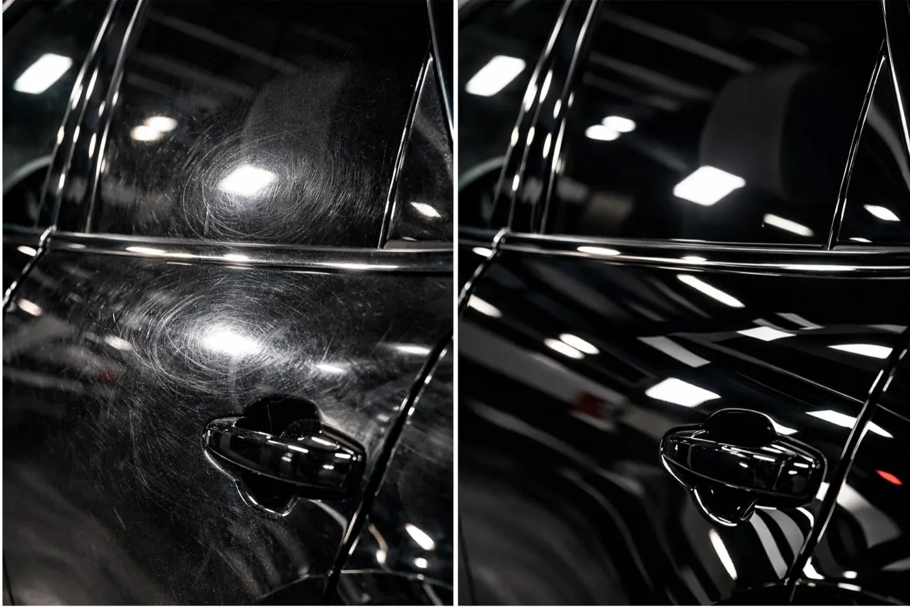
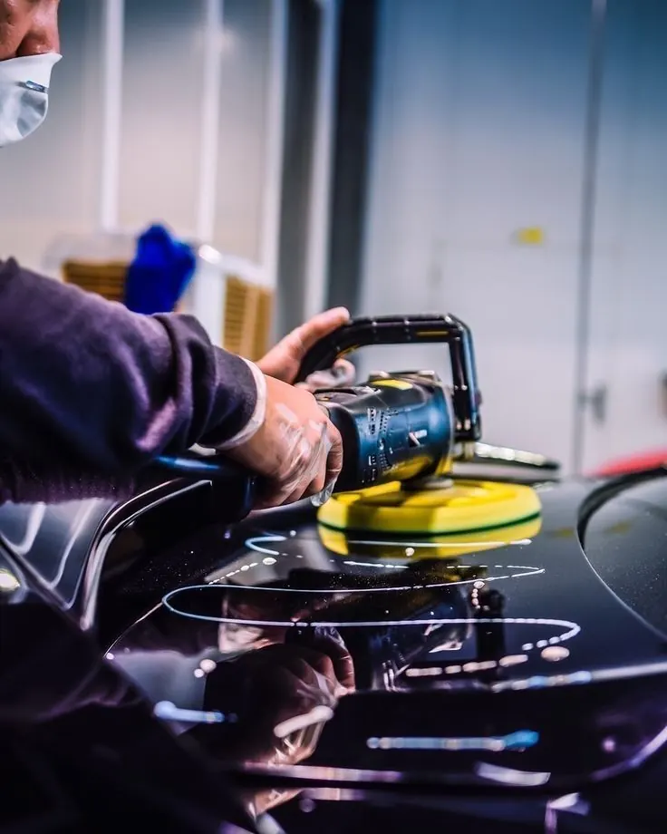
MASTER'S STORY
광택의 시초, 을지로 오장동에서 시작한 기술은 장안동을 거쳐 더 정교해졌습니다.
브랜드마다 다른 도장 경도, 누적된 세차 흔적, 재도장 이력까지 먼저 읽습니다. 정해진 공정을 반복하는 대신 차량 한 대마다 가장 안전하고 정확한 순서를 새로 설계합니다.
“제 마음에 들지 않는 결과물은
고객님께도 드리지 않습니다.”
RESTORATION WORK
신차 컨디션 관리부터 도색 후처리, 클래식카 복원까지. 현재 상태와 원하는 결과를 기준으로 필요한 작업만 제안합니다.
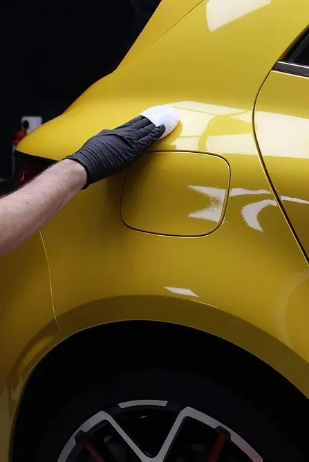
01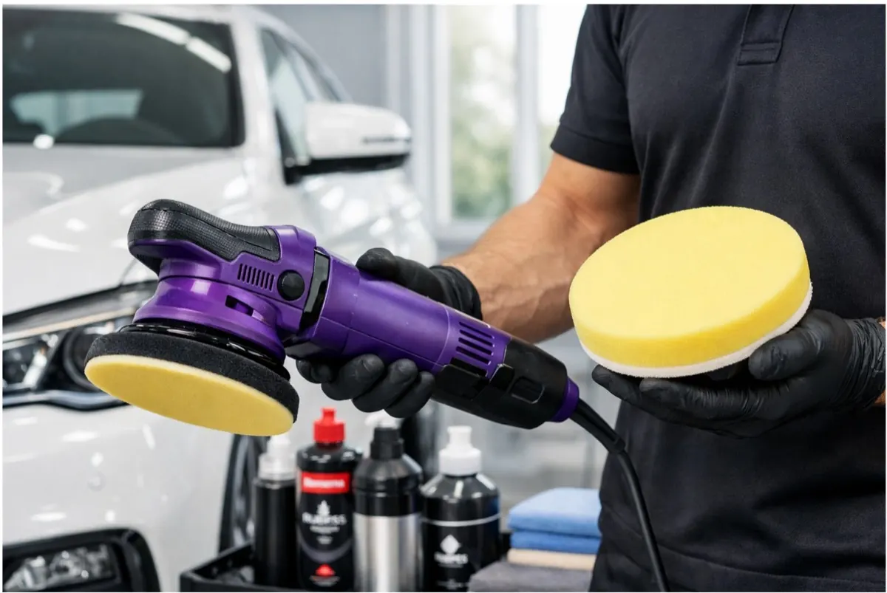
02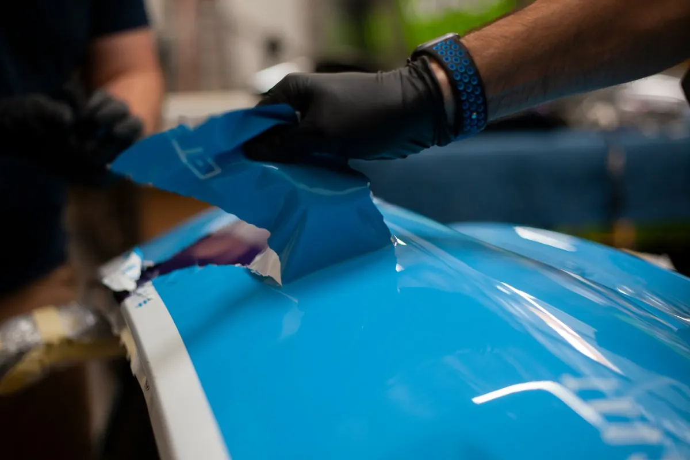
03DIAGNOSIS & RECOVERY
홀로그램, 버핑 자국, 과도한 삭감 등 이전 시공의 문제를 먼저 확인하고 가능한 복원 범위를 안내합니다.
이 서비스 상담하기THE PROCESS
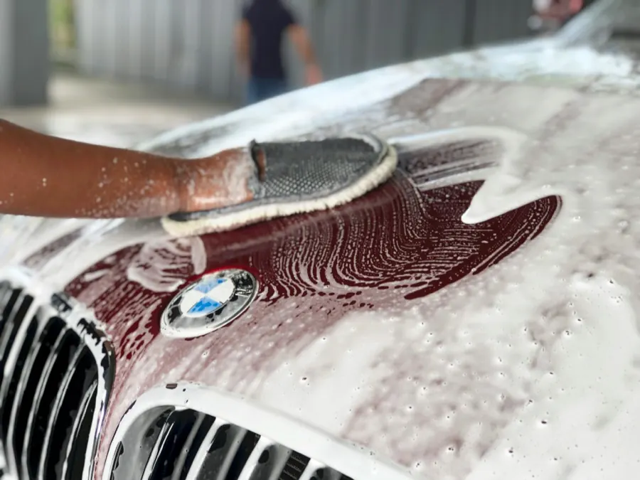
오염을 안전하게 제거한 뒤 조명 아래에서 도막 상태, 스크래치 깊이, 재도장 여부를 확인합니다.
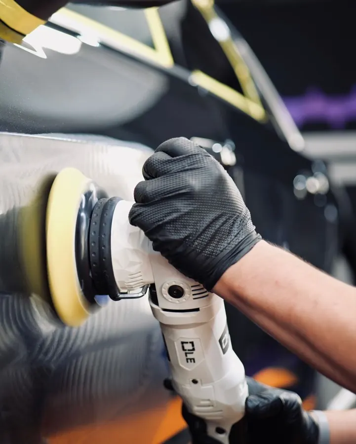
도장 경도와 손상 정도에 맞춰 약품과 패드를 조합하고, 필요한 만큼만 단계적으로 다듬습니다.
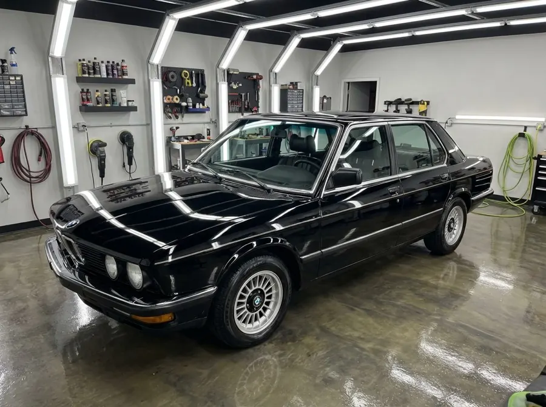
색감과 광도를 다시 확인하고 도장면을 보호하는 마감재를 적용한 뒤 최종 상태를 함께 확인합니다.
CARE PROGRAM
표시 금액은 시작가이며 차량 크기, 도장 상태, 필요한 공정에 따라 달라질 수 있습니다. 사진 상담 후 예상 범위를 먼저 안내합니다.
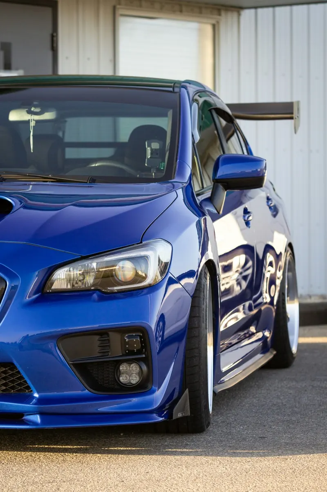
출고 1~3년, 생활 스크래치와 광도 저하가 신경 쓰이는 차량에 적합합니다.
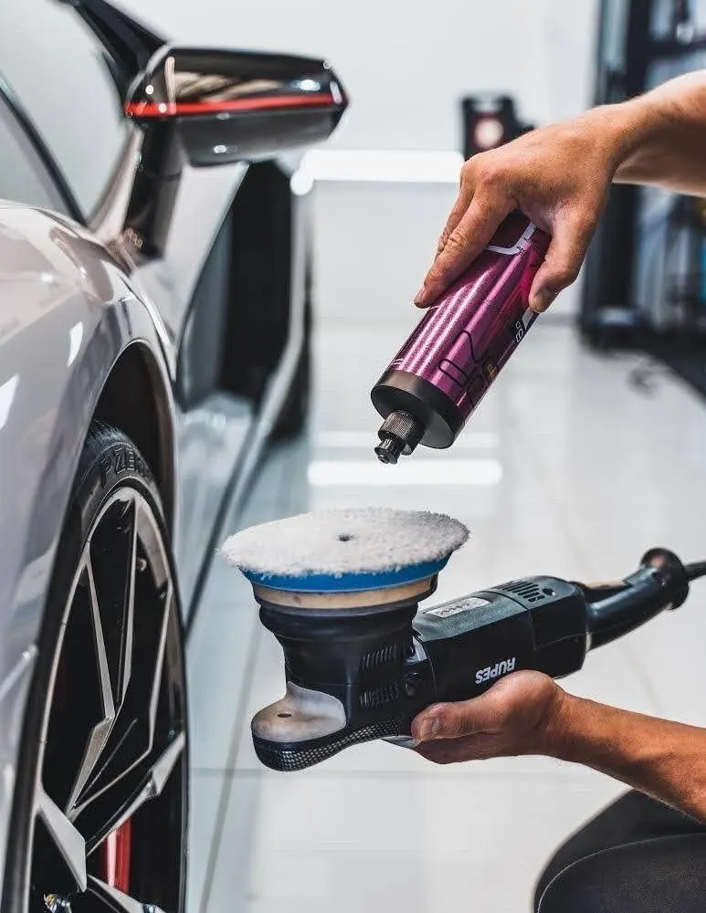
출고 3년 이상, 자동세차 기스와 묵은 흔적을 정교하게 복원하고 싶은 차량에 적합합니다.
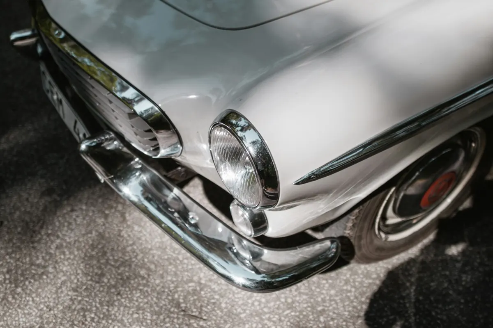
클래식카, 소장용 차량, 고가 수입차를 위한 하루 1대 전담 복원 프로그램입니다.
BOOK YOUR RESTORATION
차종과 연식, 전체 모습 1장, 상처 부위 1장을 보내주세요. 사진을 먼저 확인한 뒤 가능한 복원 범위와 예상 비용을 안내해 드립니다.